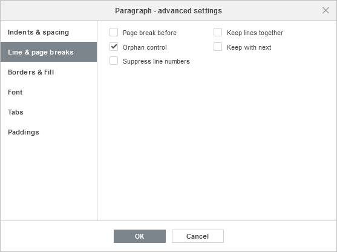

Umetanje preloma stranice
U Document Editor-u možete dodati prelom stranice kako biste započeli novu stranicu, ubacili praznu stranicu i prilagodili opcije numerisanja stranica.
Da biste umetnuli prelom stranice na trenutnoj poziciji kursora, kliknite na ikonu Prelomi na kartici Umetanje ili Raspored gornje trake sa alatkama ili kliknite na strelicu pored ove ikone i izaberite opciju Umetni prelom stranice iz menija. Takođe možete koristiti kombinaciju tastera Ctrl+Enter.
Da biste umetnuli praznu stranicu na trenutnoj poziciji kursora, kliknite na ikonu Prazna stranica na kartici Umetanje gornje trake sa alatkama. Ova radnja umeće dva preloma stranice koji formiraju praznu stranicu.
Da biste umetnuli prelom stranice pre izabranog pasusa, odnosno započeli taj pasus na vrhu nove stranice:
- kliknite desnim tasterom miša i izaberite opciju Prelom stranice pre iz menija, ili
- kliknite desnim tasterom miša, izaberite opciju Napredna podešavanja pasusa iz menija ili koristite link Prikaži napredna podešavanja na desnoj bočnoj traci, a zatim označite polje Prelom stranice pre na kartici Redovi i prelomi stranica u otvorenom prozoru Pasus – napredna podešavanja.
Da biste zadržali redove zajedno tako da se na novu stranicu premeštaju samo celi pasusi (odnosno da ne dođe do preloma stranice između redova unutar jednog pasusa),
- kliknite desnim tasterom miša i izaberite opciju Zadrži redove zajedno iz menija, ili
- kliknite desnim tasterom miša, izaberite opciju Napredna podešavanja pasusa iz menija ili koristite link Prikaži napredna podešavanja na desnoj bočnoj traci, a zatim označite polje Zadrži redove zajedno u odeljku Redovi i prelomi stranica u otvorenom prozoru Pasus – napredna podešavanja.
Kartica Redovi i prelomi stranica u prozoru Pasus – napredna podešavanja omogućava podešavanje još tri opcije za prelamanje stranica:
- Zadrži sa sledećim – koristi se za sprečavanje preloma stranice između izabranog pasusa i sledećeg pasusa.
- Kontrola siročadi – podrazumevano je uključena i koristi se za sprečavanje da se samo jedan red pasusa (prvi ili poslednji) pojavi na vrhu ili dnu stranice.
- Onemogući brojeve redova – koristi se za uklanjanje brojeva redova.
